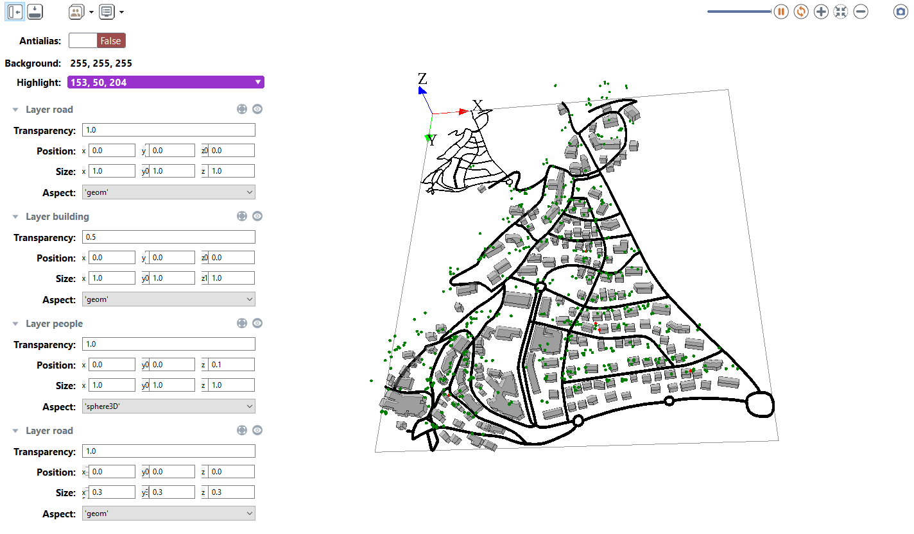

type:opengl in the output of your model (or use the preferences->display windows to use it by default):
output {
display DisplayName type:opengl {
species mySpecies;
}
The opengl display share most of the feature that the java2D offers and that are described here.
Using 3D display offers many way to represent a simulation. A layer can be positioned and scaled in a 3D world. It is possible to superpose layer on different z value and display different information on the model at different position on the screen.
Layer can be drawn on different position (x,y and z) value using the position facet
Layer can be drawn with different size (x,y and z) using the size facet
Here is an example of display using all the previous facet (experiment factice to add to the model Incremental Model 5). You can also dynamically change those value by showing the side bar in the display.
experiment expe_test type:gui {
output {
display city_display type: opengl{
species road aspect: geom refresh:false;
species building aspect: geom transparency:0.5 ;
species people aspect: sphere3D position:{0,0,0.1};
species road aspect: geom size:{0.3,0.3,0.3};
}
}
}

<img src=’http://img.youtube.com/vi/rMIVQlul1Ag/0.jpg’ width=’425’ height=344 />
User have the possibility to set dynamically the parameter of the camera (observer). The basic camera properties are its position, the direction in which is pointing, and its orientation. Those 3 parameters can be set dynamically at each iteration of the simulation.
The facet camera_pos(x,y,z) places the camera at the given position.
The default camera positon is (world.width/2,world/height/2,world.maxDim*1.5) to place the camera at the middle of the environement at an altitude that enables to see the entire environment.
The facet camera_look_pos(x,y,z) points the camera toward the given position. The default look position is (world.width/2,world/height/2,0) to look at the center of the environment.
The camera camera_up_vector(x,y,z) sets the up vector of the camera.
The up vector direction in your scene is the up direction on your display screen.
The default value is (0,1,0)
Here are some examples that can be done using those 3 parameters. You can test it by running the following model:
<img src=’http://img.youtube.com/vi/lQVGD8aDKZY/0.jpg’ width=’425’ height=344 />
display RealBoids type:opengl{
...
}
You can set the position as a first person shooter video game using:
display FirstPerson type:opengl
camera_pos:{boids(1).location.x,-boids(1).location.y,10}
camera_look_pos:{cos(boids(1).heading)*world.shape.width,-sin(boids(1).heading)*world.shape.height,0}
camera_up_vector:{0.0,0.0,1.0}{
...
}
You can follow an agent during a simulation by positioning the camera above it using:
display ThirdPerson type:opengl camera_pos:{boids(1).location.x,-boids(1).location.y,250} camera_look_pos:{boids(1).location.x,-boids(1).location.y,boids(1).location.z}{
...
}
In a 3D scene once can define light sources. The way how light sources and 3D object interact is called lighting. Lighting is an important factor to render realistic scenes.
In a real world, the color that we see depend on the interaction between color material surfaces, the light sources and the position of the viewer. There are four kinds of lighting called ambient, diffuse, specular and emissive.
Gama handle ambient and diffuse light.
*2}.Here is an example using all the available facet to define a diffuse light that rotate around the world.
<img src=’http://img.youtube.com/vi/op56elmEEYs/0.jpg’ width=’425’ height=344 />
display View1 type:opengl draw_diffuse_light:true ambient_light:(0) diffuse_light:(255) diffuse_light_pos:{50+ 150*sin(time*2),50,150*cos(time*2){
...
}